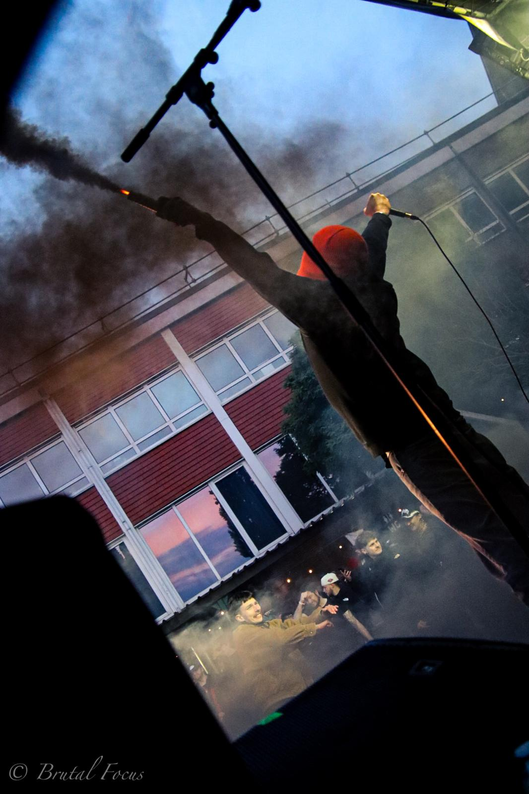
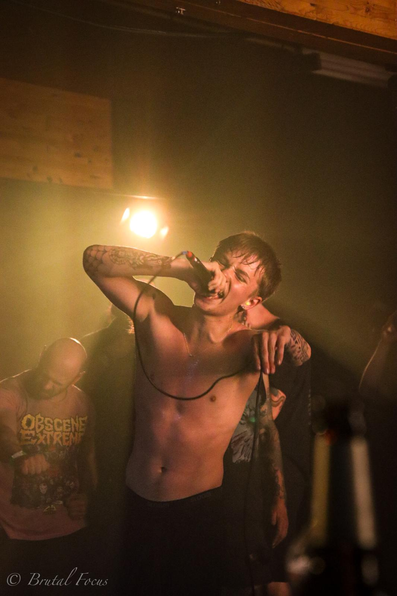
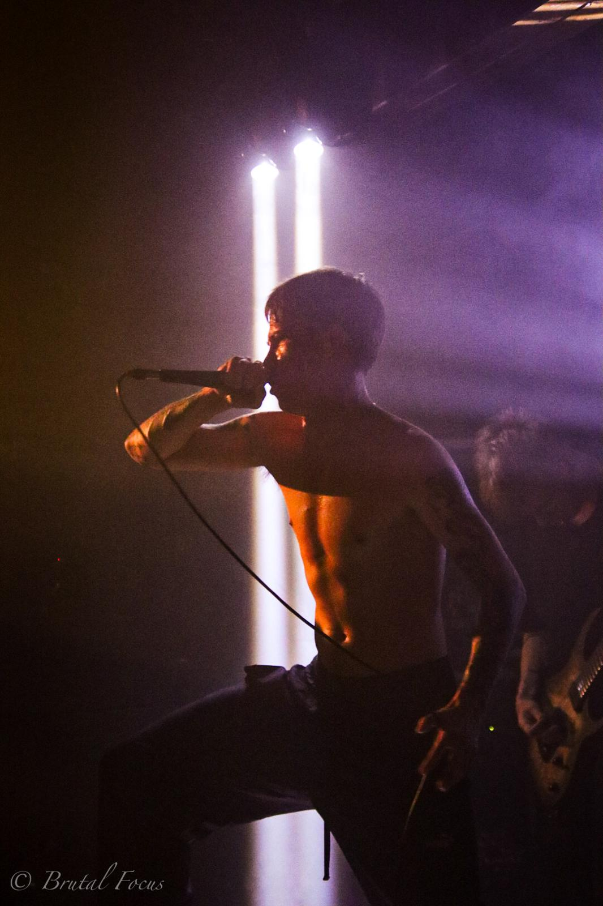
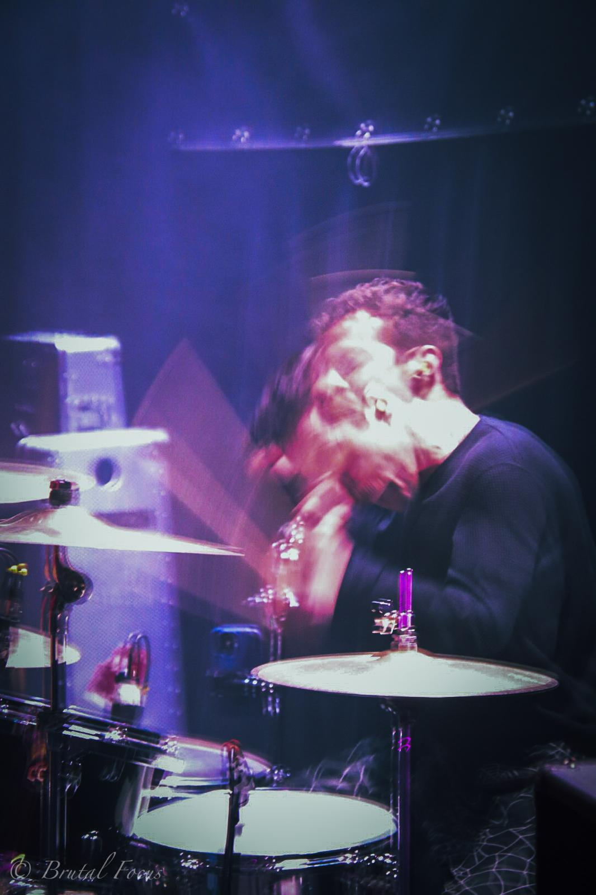
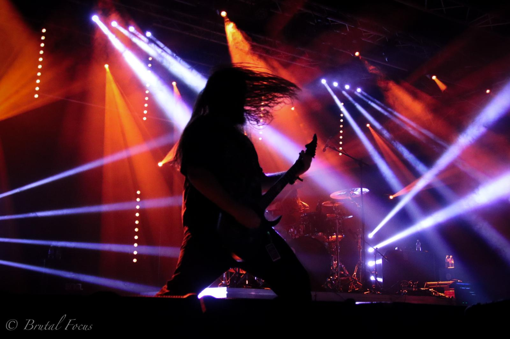
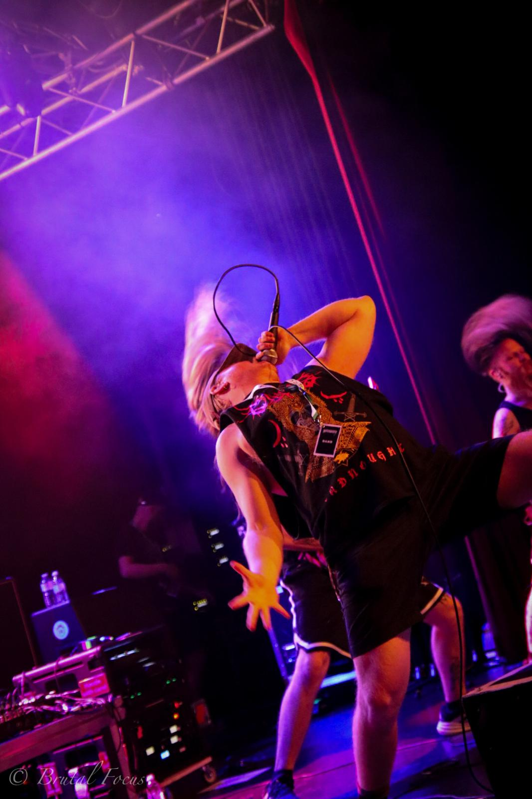
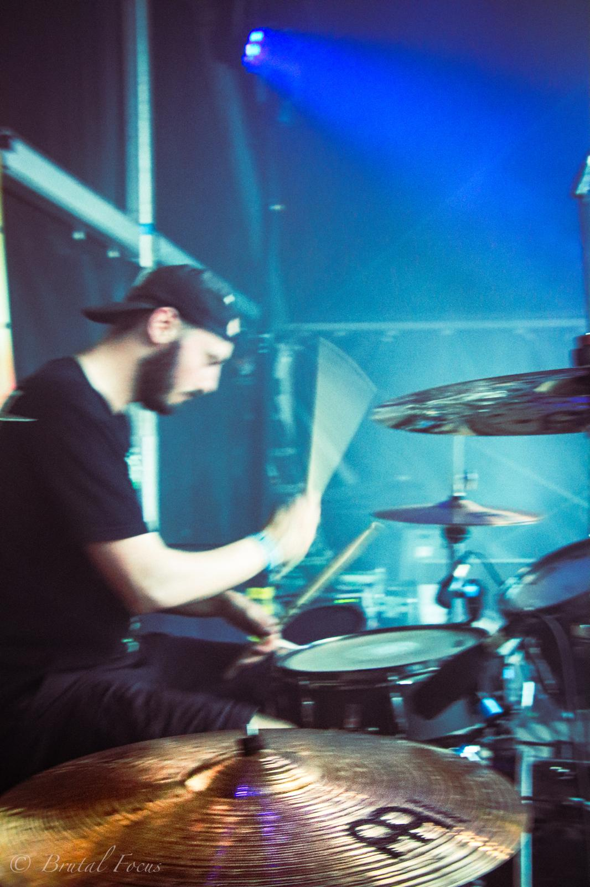

LIVE MUSIC PHOTOGRAPHER • BELGIUM
Entre lumières aveuglantes, murs d'amplis et chaos du pit, je capture l'énergie brute de la scène metal.
Découvrir mon univers
15 mai 2026
Halle
Whatever It Takes

9 mai 2026
Maison des jeunes de Jupille
Guttural Disgorge

9 mai 2026
Maison des jeunes de Jupille
Guttural Disgorge

15 avril 2026
Don't Try

11 octobre 2025
Centre culturel de Chênée
Guttural Slug

11 octobre 2025
Centre culturel de Chênée
Guttural Slug

19 juin 2026
Auberge Simenon
Coloscopy
Je suis Sarah, photographe belge passionnée par la scène metal, hardcore et punk. À travers Brutal Focus, je cherche à capturer l'énergie brute des concerts : les mouvements, les émotions, la lumière et les instants uniques qui disparaissent en quelques secondes. Mon objectif est de retranscrire l'ambiance d'un concert et de faire revivre ces moments à travers mes images.
Photographie live de groupes metal, hardcore et punk. Capturer l'énergie de la scène et du public.
Soutien aux groupes émergents et aux événements locaux grâce à la photographie.
Un projet basé sur la passion de la musique extrême et des moments uniques.
Capturer l'énergie de la scène, les émotions des artistes et l'ambiance du public.
Reportages photo d'événements metal, hardcore, punk, etc.
Photos promotionnelles, visuels pour réseaux sociaux et souvenirs de tournée.
6K Fest
Deathtober Fest
DimFest
SkallyFest
Vulvectomy
Guttural Slug
Agnostic Front
+ d'autres à venir...
Concerts
Festivals
Tournées
Photos promotionnelles
Backstage
Vous souhaitez des photos de votre concert, festival ou groupe ? N'hésitez pas à me contacter pour discuter de votre projet.
📍 Belgique
📧 brutalfocus002@gmail.com
📸 Instagram : @brutalfocus.be
📘 Facebook : Brutal Focus